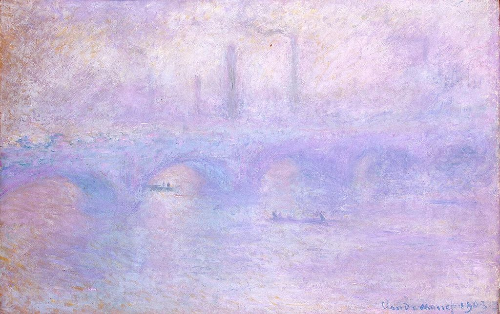

<head>
<meta charset="UTF-8" />
<meta name="keywords" content="drawing, painting" />
<meta name="description" content="drawings by Sunjy" />
<title>Sunjy</title>
<link rel="shortcut icon" type="image/x-icon" href="../../mImages/mCommon/favicon.ico" media="screen" />
<link rel="stylesheet" type="text/css" href="../../mCsses/mCommon/mCssA.css" />
<link rel="stylesheet" type="text/css" href="../../mCsses/mCommon/mCssB.css" />
<link rel="stylesheet" type="text/css" href="../../mCsses/mCommon/mCssC.css" />
<link rel="stylesheet" type="text/css" href="../../mCsses/mCommon/mCssD.css" />
<link rel="stylesheet" type="text/css" href="../../mCsses/mContent/mCssA.css" />
<link rel="stylesheet" type="text/css" href="../../mCsses/mContent/mCssB.css" />
<link rel="stylesheet" type="text/css" href="../../mCsses/mContent/mCssC.css" />
<link rel="stylesheet" type="text/css" href="../../mCsses/mContent/mCssD.css" />
</head>
<script type="text/javascript" src="../../mScripts/mContent/mContentAA.js" /></script>
<script type="text/javascript" src="../../mScripts/mContent/mContentAB.js" /></script>
<script type="text/javascript" src="../../mScripts/mContent/mContentAC.js" /></script>
<script type="text/javascript" src="../../mScripts/mContent/mContentAD.js" /></script>
<script type="text/javascript"></script> 
<script type="text/javascript">
document.write('<div class="mImgAbsolute"></div>');
/*
document.write('<p class="mFontSizeBColor" />From a white paper...</p>');
document.write('<table class="center"><tr><td>');
document.write('');
document.write('</td></tr></table>');
*/
</script>


<script type="text/javascript">
document.write('<p class="mFontSizeBColor" />Waterloo Bridge. Effect of Fog </p>');
document.write('<p class="mFontSizeSColor" />Waterloo Bridge. Effect of Fog by Claude Monet depicts the bridge crosses the River Thames in London. Its name commemorates the victory of the British at the Battle of Waterloo in 1815. Positioned at a strategic bend in the river, it provides the best ground-level views of Westminster and the London Eye to the west, and the City of London and Canary Wharf to the east. From his room in the Savoy Hotel, Monet had a view over the Thames towards Waterloo Bridge.<br><br>Monet’s first layers of paint were very thin, the thicker areas were developing as he continued to add layers and rework the surface. Monet captured a moment’s passing impression, which gave Impressionism its name. His trips to London in 1889, 1900, and 1901 seemed to fall always in the foggy season.<br><br>Like many Impressionists, Monet was drawn to scenes of everyday life, and on the river, he depicted different types of shipping vessels. Across the bridge are visible the factory smokestacks filling the air with smog. The smoke from the steam train and chimnies would appear surreal to the modern viewer.<br></p>');
document.write('<table class="center" /><tr><td>');
document.write('<br>Monet’s first layers of paint were very thin, the thicker areas were developing as he continued to add layers and rework the surface. Monet captured a moment’s passing impression, which gave Impressionism its name. His trips to London in 1889, 1900, and 1901 seemed to fall always in the foggy season.<br><br>Like many Impressionists, Monet was drawn to scenes of everyday life, and on the river, he depicted different types of shipping vessels. Across the bridge are visible the factory smokestacks filling the air with smog. The smoke from the steam train and chimnies would appear surreal to the modern viewer.<br>" />');
document.write('</td></tr></table>');
</script>


